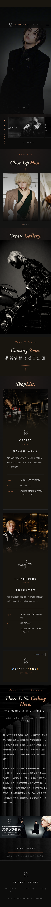
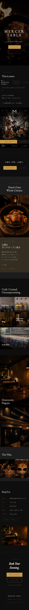

No4.DesignClub
← All Categories
No4.DesignClub
← All Categories
No4.DesignClub
← All Categories
No4.DesignClub
← All Categories
世界観を、誌面のように組む。企画・コピー・デザイン・実装まで一貫したエディトリアルLP。
検索エンジンだけでなく、AIの回答にも拾われる構造設計にも対応。
「男に惚れろ。」を掲げたキャンペーンサイト。ホストクラブの世界観を、ハイブランド誌の文法で組んだ多ページ・エディトリアル。
実際のサイトを見る ↗ホストクラブ業界のWebサイトは、扇情的な演出とテンプレート的な作りに寄りがちで、「よくあるホストクラブのLP」という印象を脱するのが難しい。CREATE GROUPが狙うのは、女性客の来店動機・ホストの入店/移籍動機・在籍スタッフの帰属意識という3つの異なる層に、同じ1つのサイトで訴求すること。
しかし業界内の文法をなぞる限り、どの層にも「あるある」以上の印象は残せない。参照点を業界の外に置く必要があった。
CREATE GROUPには既に「男に惚れろ。」という強いキャンペーンコピーと、トラック広告で実際に使用された高品質な写真・映像素材があった。この資産を単なる掲載素材として扱うのではなく、ハイブランドのキャンペーンサイトと同じ文法で再構成することで、業界の外側にある信頼性の物差しをそのままWeb体験に持ち込む戦略を取った。
参照したのはLando Norris公式サイト（ライムグリーン1色アクセント×ダーク×大胆な余白）、Utah Jazz「Purple is Back」（黒白ミニマル×キネティックタイポ）、Slosh Seltzer（カーソル追従インタラクション）。いずれもホストクラブとは無関係な、ハイブランド/海外キャンペーンサイトの文法。スタッフ自身に「これを自分たちで作れるのか」と驚かれる完成度を目標に据えた。
装飾を積み重ねるのではなく、絞ることでラグジュアリー感を作る。ゴールドは背景やベタ塗りに使わず、写真への薄いデュオトーン・1pxの細い線・CTAボタンのみに使用箇所を限定。「驚きの仕掛け」も全部盛りにせず、スクロール連動のキネティックタイポグラフィと、カーソル追従の金の光の粒子演出の2つだけに絞り込んだ。


見出し文字がスクロールに連動して立ち上がるキネティックタイポと、カーソル/指の動きに追従する金の光の粒子演出。エフェクトを積み重ねるのではなく、この一つの動きだけを徹底することで「派手」ではなく「精度」で魅せる。
企画・コピーライティング・ビジュアルディレクション・実装まで、外部発注を挟まずひとつのチームで最後まで担当。シングルページ構成から多ページ・エディトリアル構成へ、素材が揃うたびに反復しながら完成度を積み上げていった。
大須の実在店舗。RAW. REAL. UNFILTERED. を掲げるNY Gallery Bistro。ブランディングからSNSまで一貫担当。


架空エナジードリンクブランドの視覚特化ショーケース。PC向けの表現に振り切った、デザインの実験作。

架空フレグランスブランドのエディトリアルLP。静けさと余白で「香り」を視覚化した、もう一つの実験作。